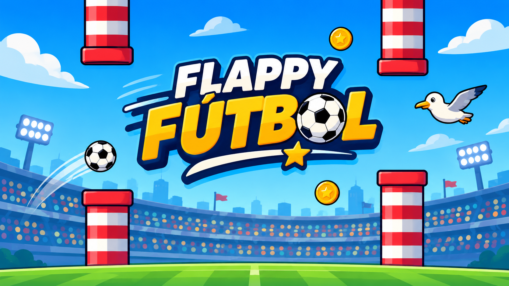
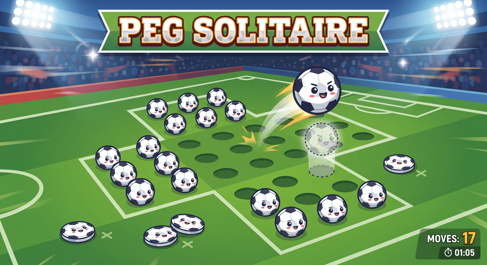
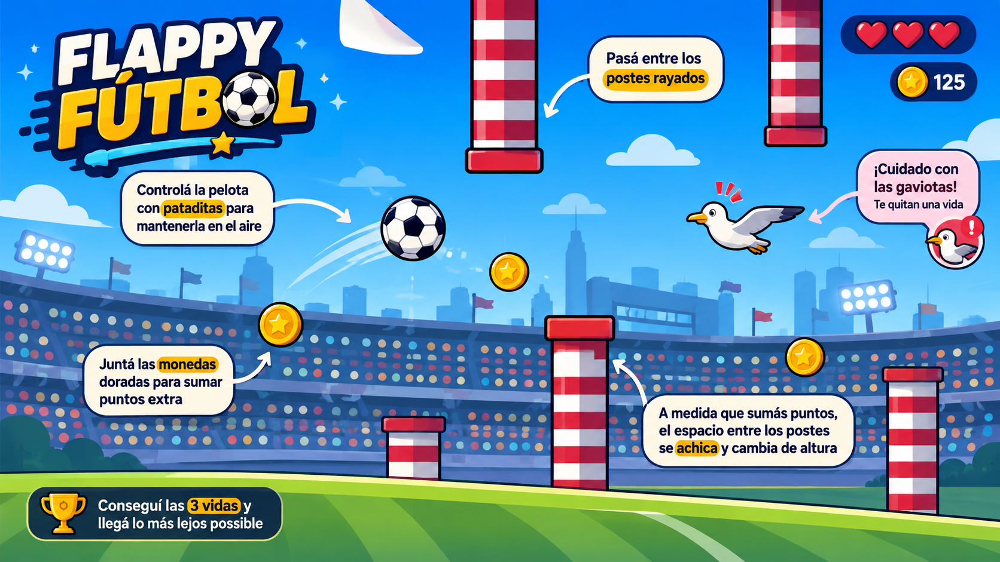

Espacio, flecha arriba o clic para patear la pelota y mantenerla en el aire.
Flappy Fútbol
Flappy Fútbol es un juego de scroll horizontal inspirado en Flappy Bird. Controlás una pelota que avanza sola por un estadio y tenés que pasarla entre los postes rayados dando pataditas para mantenerla en el aire. A medida que sumás puntos, el espacio entre los postes se achica y cambia de altura. Cuidado con las gaviotas, que te quitan una vida, y juntá las monedas doradas para ganar puntos extra. El escenario tiene varias capas con efecto parallax y tres vidas para que llegues lo más lejos posible.



- Desarrollador:
- PixelCorner Studio
- Calificación:
- 5/10
- Fecha de lanzamiento:
- 24/11/2026
Cómo jugar
- Presioná Comenzar (o hacé clic en la pantalla) para empezar. La pelota avanza sola a velocidad constante.
- Usá la barra espaciadora, la flecha arriba o el clic para patear y subir. Si no das impulso, la pelota cae.
- Pasá por el hueco entre los postes: cada par superado suma 1 punto.
- Los postes no están siempre a la misma distancia, el hueco cambia de altura y se va achicando a medida que avanzás.
- Las gaviotas te quitan 1 vida. Tenés 3 vidas y quedás protegido un instante después de cada golpe. El juego sigue.
- Las monedas doradas suman 5 puntos.
- Si chocás contra un poste o caés al césped, la pelota explota y termina el partido. También termina si perdés las 3 vidas.
- Tu mejor puntaje queda guardado. Podés elegir el tipo de pelota en el selector y usar Reiniciar para empezar de nuevo.